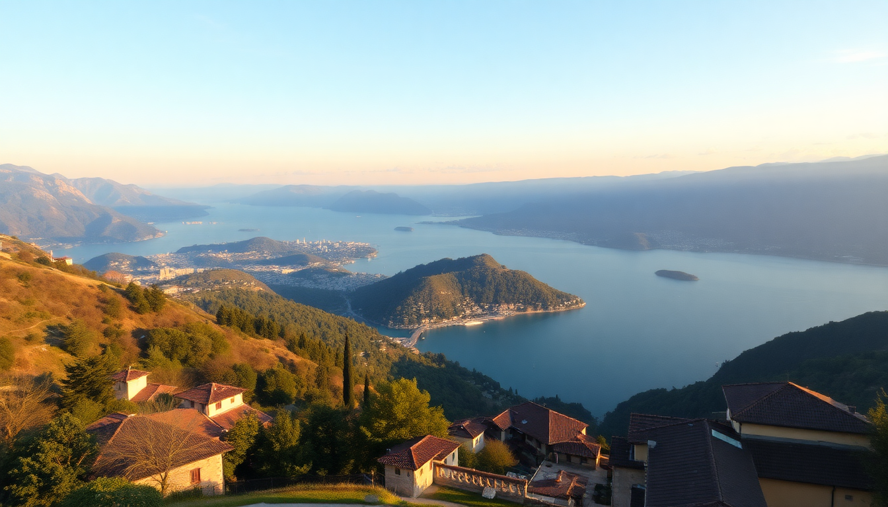

Best Day Trips from Milan: Lake Como, Bergamo & Verona

I’ve spent a fair chunk of time based in Milan, and the best thing about the city is how easy it is to leave. Three destinations—Lake Como, Bergamo, and Verona—are all under two hours by train, and each offers a completely different Italian experience. Here’s what I actually did, what I’d skip, and what I’d do again.
Is Lake Como worth the hype from Milan?
Yes, but you have to pick your town carefully. I made the mistake of heading straight to Bellagio on a Saturday in July—it was shoulder-to-shoulder, and I spent more time queuing for the ferry than looking at the lake. Come back on a weekday, or better yet, skip Bellagio for Varenna.
- Varenna: Quieter, prettier, and the short ferry to Menaggio gives you the classic lake views without the crowds. I had lunch at Al Prato—simple pasta with lake fish, no tourist menu in sight.
- Train from Milan: Take the Trenitalia regional train from Milano Centrale to Varenna-Esino. It’s about an hour, €8 each way, and runs hourly.
- Villa del Balbianello in Lenno: Worth the ferry ride if you’re a Star Wars fan (it was used as Naboo in Episode II). Book tickets in advance online—they sell out by 11 a.m. in summer.
- What I’d skip: The Como-Brunate funicular. The view from the top is fine, but you get better panoramas from the ferry for free.
My honest take: Lake Como is stunning, but it’s not a half-day trip. Plan for at least six hours on the ground, or you’ll spend the whole time in transit.
How do you spend a day in Bergamo without the crowds?
Bergamo is my favorite day trip from Milan, and I’ve done it four times. The trick is to go straight to Città Alta (the upper town) via the funicular from the station—don’t bother with the lower city unless you need a coffee.
- Funicular: €1.30 one-way, runs every few minutes. Get off at the top and walk through Piazza Vecchia—it’s the most underrated square in northern Italy.
- Lunch at Da Mimmo: A tiny trattoria on Via Colleoni. I had the casoncelli (Bergamo’s stuffed pasta) and a half-liter of house red for €15. No English menu, no nonsense.
- Walk the Venetian Walls: A UNESCO site, and you can circle the entire upper town in about 45 minutes. Great views of the Alps on a clear day.
- Skip the Accademia Carrara unless you’re a serious art buff. The collection is good, but the real show is the city itself.
Train from Milano Centrale to Bergamo station takes 50 minutes on the Trenitalia regional. Trains run every 30 minutes. I usually catch the 8:30 a.m. and I’m back in Milan by 5 p.m. with time for an aperitivo.
Can you really do Verona in a day from Milan?
Yes, but you’ll need to move at a steady pace. Verona is smaller than you think, and most of the main sights cluster around the Adige River bend. I did it on a Tuesday in March and had the arena almost to myself.
- Arena di Verona: Skip the guided tour. Just buy the €10 entry and walk through. The acoustics are incredible—I stood in the center and hummed, and it echoed like a cathedral.
- Piazza delle Erbe: The market square is chaotic but fun. Grab a plate of bigoli (thick spaghetti) at Osteria al Duca—it’s a few steps off the square and half the price of the tourist traps.
- Juliet’s House: Overrated. I walked past the queue of 80 people taking photos of a bronze statue. If you must, go at 8 a.m. before the crowds.
- Castel San Pietro: Climb the stairs for the best view over the red rooftops. Free, and the sunset light is golden.
Train from Milano Centrale to Verona Porta Nuova takes 80 minutes on Frecciarossa (high-speed). Book on Trenitalia a few days ahead for €15–20 one-way; same-day tickets are closer to €40. I’ve also done it on the regional for €12, but it takes two hours.
What’s the best way to get between these day trips?
I wouldn’t try to do more than one in a day—you’ll just eat travel time. But if you’re planning a multi-day loop, here’s the route I’d take from Milan:
- Milan → Bergamo: 50 minutes by regional train. Stay in Città Alta if you can—Hotel Gombit is a great mid-range option with views over the valley.
- Bergamo → Verona: 1 hour 40 minutes by regional train via Brescia. No direct high-speed, so just relax and watch the countryside.
- Verona → Lake Como (Varenna): 2 hours by regional train, changing at Milano Centrale. It’s a long day, but doable if you start early.
- Lake Como → Milan: 1 hour back on the regional.
I always use Omio to check schedules, but buy tickets directly from Trenitalia to avoid booking fees. No need for a rental car—parking in Bergamo’s upper town is a nightmare, and Lake Como’s narrow roads are worse.
When should you visit Milan’s day-trip towns?
- Lake Como: May–June or September. July and August are packed, and many restaurants close for vacation in August anyway. I went in early June and had perfect 22°C weather with light crowds.
- Bergamo: Any month except August. I’ve been in December (Christmas market in Piazza Vecchia) and April (blooming wisteria on the walls). Both were excellent.
- Verona: March–May or October. The opera season at the Arena runs June–August, which means huge crowds and inflated hotel prices. I saw Aida once—magical, but book a year ahead.
FAQ
Which day trip from Milan is best for first-time visitors? Bergamo. It’s the shortest train ride, the easiest to navigate on foot, and offers a real Italian hill town without the tourist crush of Lake Como or the ticket queues of Verona. You’ll feel like you discovered something.
Do I need to book train tickets in advance? For regional trains (Milan–Bergamo, Milan–Varenna), no—tickets are valid for any train that day. For high-speed trains to Verona (Frecciarossa), yes, book a few days ahead to save money. I once paid €45 for a same-day ticket to Verona that was €18 the week before.
Can I visit Lake Como and Bergamo in the same day? Technically yes, but I wouldn’t. The travel time adds up to about three hours round-trip, and you’ll only have 30 minutes in each place. Pick one and give it the afternoon it deserves.
Conclusion
- Bergamo is the most underrated day trip—quiet, affordable, and authentic. Go for the casoncelli and the wall walk.
- Lake Como is worth it if you pick Varenna over Bellagio and go on a weekday. Skip the funicular.
- Verona works as a day trip if you move fast. See the Arena, eat at Osteria al Duca, and skip Juliet’s balcony.
- Use Trenitalia regional trains for Lake Como and Bergamo; book Frecciarossa early for Verona.
- Avoid August. Go in late spring or early fall for the best balance of weather and crowds.